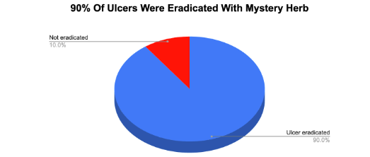
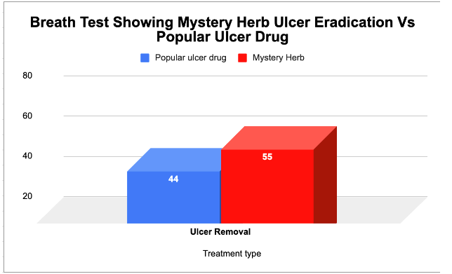
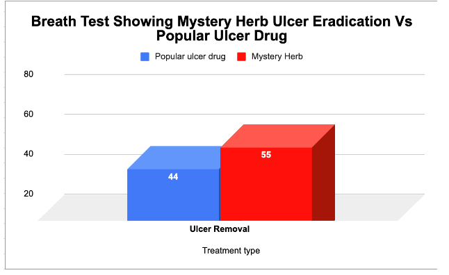
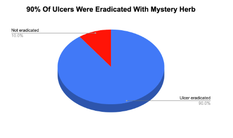
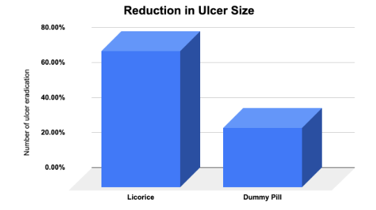
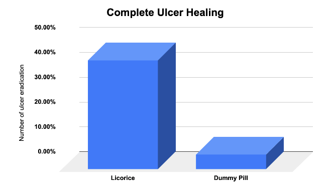
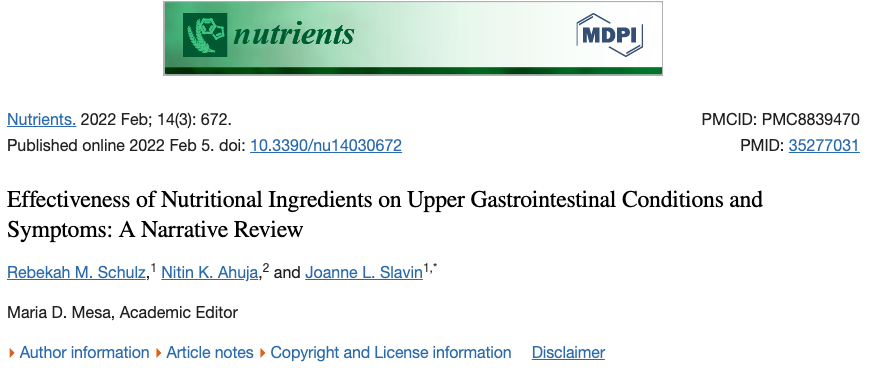
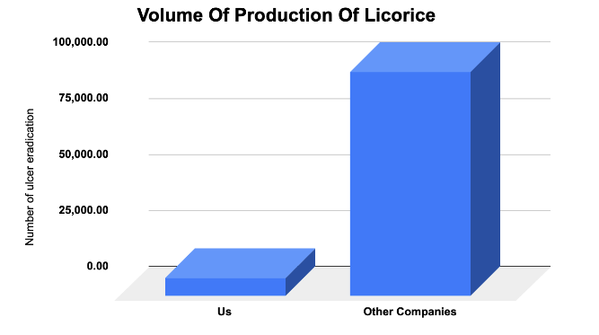
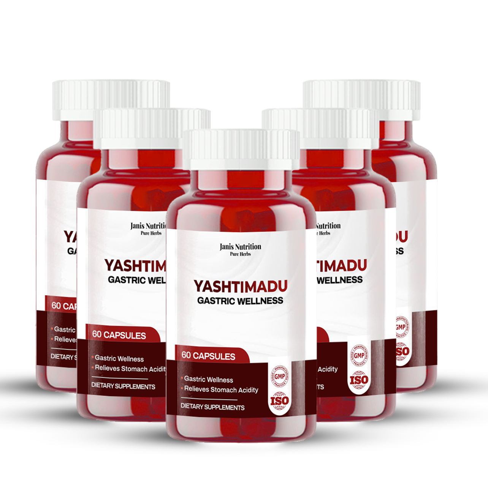

Tell me if this sounds familiar…
It's like a fire burning inside you.
The morning greets you with a relentless grip that tightens your chest…
Making it hard to breathe.
At breakfast, swallowing becomes a challenge.
Every bite feels like shards of glass scratching your throat.
The taste of acid rises, bitter and uncomfortable.
Work stress triggers another flare-up.
The discomfort lingers, distracting you from your tasks.
It's frustrating, to say the least.
Lunchtime arrives, and you hesitate.
Will this meal bring relief or add fuel to the fire?
Even simple foods have become your enemies.
Spicy dishes, once a favorite, are now forbidden, intensifying your frustration.
And to make things worse…
Doctor visits only offer temporary relief.
He tells you you have H. pylori eating up your stomach walls…
So he prescribes antacids, like Tums or Rolaids, to bring fleeting moments of respite.
And he tells you to stop taking aspirin and other NSAIDs.
But still, none of this is giving you the kind of comfort that makes life enjoyable.
You've tried proton pump inhibitors (PPIs) like Prilosec or Nexium, hoping for a breakthrough, but disappointment persists.
To sleep becomes a battle.
Because merely lying down intensifies the burning agony…
Leaving you restless…
Tossing and turning…
Longing for relief that never seems to come.
Ulcer…
Heartburn…
Acid reflux…
These are all problems that take the joy out of a person’s life,
Making one feel trapped in a cycle of frustration…
Seeking relief but finding only disappointment.
The good news is that on this page…
You’re going to learn about a simple 7-second research-backed button inside us…
That stops even the worst cases of ulcer, heartburn, and acid reflux for good.
Yeah, it takes literally 7 seconds…
And you can do it from your house without seeing a doctor, going for surgery, or anything
I know this sounds like a very mighty promise…
Especially if you’ve taken Omeprazole, Ranitidine, ginger tea, and others in the past without any real difference.
But stay with me here because you’re going to see undeniable proof from the top universities, journals and publications backing up this reset.
And even more important…
You’re going to hear from people like you and me who have used this 7-second reset to stop the worst cases of ulcers, heartburn and acid reflux cases.
You’ll hear about more people like Segun Daniels
“I used to dread every meal because of the burning sensation that followed. This 7-second reset has been a game-changer! I can now enjoy my food without the fear of the ensuing pain. It's as if I've gained control over my life again. I can't tell you how good that feels.” - Segun Daniels
“I was always skeptical of new treatments, but this 7-second method? It's transformed my life. My heartburn episodes have significantly reduced, and I can enjoy my evenings again without clutching my chest in pain. It's unbelievable” - Chidinma
“Acid reflux made even the simplest tasks difficult. But ever since I started the 7-second reset, I've noticed a significant change. My acid reflux has eased considerably, and I can go about my day without the constant discomfort. This routine has truly given me a new lease on life.” - Bashir Musa
The 7-second reset has been nothing short of a blessing. My ulcer pains have almost disappeared, and I feel lighter, happier, and healthier. I can't thank this method enough for bringing back the joy in my life - John
“My heartburn was getting worse, and I was losing hope. The 7-second reset has turned that around. It's like the reset button has restored my body's balance. Now, I can enjoy my favorite foods without fear of the painful consequences." - Ijeoma
“I used to dread every meal because of the burning sensation that followed. This 7-second reset has been a game-changer! I can now enjoy my food without the fear of the ensuing pain. It's as if I've gained control over my life again. I can't tell you how good that feels.” - Segun Daniels
Imagine this
You're enjoying a plate of your favorite spicy jollof rice…
Laughing with friends…
Unafraid of the familiar burning sensation that used to follow such meals.
Imagine waking up feeling refreshed…
Not dreading the onset of pain with your first meal of the day.
Consider a life where you're not weighed down by numerous medications, invasive surgeries, or painful procedures.
That’s what this 7-second reset button lets you do.
Like it’s currently helping more than 25,600 people do.
But that’s not all…
In the next few minutes, you’ll learn about:
- The root cause of 99% of cases of ulcers, acid reflux, heartburn, and several other digestive problems that most doctors are not paying attention to.
- Why gulping down several antibiotics, Omeprazole, Ranitidine, ginger tea, and other popular remedies haven’t provided you with the kind of relief you want.
- The dangers of taking some of the most popular remedies out there. (Some are life-threatening).
And finally…
You’ll see how the 7-second reset lets you can banish the burning pain…
And go back to eating all the foods (including the spicy ones) you want without triggering the pain.
All of that and more is coming up on this page.
But before we get started, I should introduce myself.
Hi, I'm Emmanuel Ogunde.
I'm a microbiologist and a specialist in bacteriology.
For over 20 years, I've been in the forefront of exploring the intriguing relationship between humans and the microorganisms in our bodies and our environment.
I've traveled around quite a lot, attending several conferences, and learning from some of the brightest minds in my field.
This journey has given me deep insights into how these microscopic organisms influence our health.
But it was a personal experience that led me down a new path in my research -- my wife.
My wife has always been the stronger half of us.
But then she got down with a severe case of stomach ulcer.
We tried everything.
Every recommended drug, every promising treatment, every esteemed specialist. Nothing helped.
I watched my wife wince in pain, her hands clutching her stomach.
She would force a smile, pretending she was fine.
But I could see the agony in her eyes.
Our home felt like a revolving door of doctors…
Each one leaving with a shrug and an "I'm sorry, we're trying our best."
I felt helpless.
As a husband and a scientist, I couldn't accept that.
So, I turned my work towards finding a solution.
Thus began my journey of exploration and discovery.
A journey into the world of bacteria…
But this time with a focus on those that wreak havoc on our stomachs, causing ulcers, heartburn, and acid reflux.
My passion was fuelled by a singular image - my wife's pain-filled eyes.
I began studying.
I thought it would only take a few hours.
But hours turned into days…
Days into weeks…
And weeks into months.
First, I didn't see anything new.
It was generic advice like:
Cut out alcohol…
Stop taking NSAIDs…
Limit spicy foods…
And antibiotics that I was seeing.
But just before I gave up…
I started seeing a new strand of evidence.
Something that sounded completely different from the popular advice.
And that was backed by multiple independent scientific research.
I saw hope.
Hope for a solution that could remove the pains of wife…
And the millions of people suffering from ulcer, heartburn, and acid reflux that just won't go.
And then, it happened.
Through rigorous research, I stumbled upon a method, a 7-second reset approach that specifically targets the root cause of the problem.
And when I finally cracked the code…
The improvement was miraculous.
My wife started eating without pain again…
She says it doesn't feel like each food lights up a fire inside her anymore…
Her nights became restful…
And it showed on her face.
Her radiant smile returned too…
And this time, I could tell it was genuine (not forced).
My heart, once heavy with worry, was filled with joy and relief.
This breakthrough spurred me to share my knowledge…
To offer hope and relief to others facing similar health issues.
To assure you that there is a way out of the pain and discomfort.
Pay close attention here.
Time for the truth.
The Real Culprit Behind Ulcer, Heartburn, And Acid Refluxes That Just Won’t Go Your Doctor NEVER Thought Of This
As I dug into a mountain of research…
Everything pointed me back to something very simple and essential to our normal functioning…
But the same one that many doctors never pay attention to.
The Gut!
Let's see what's really going on.
Think of your body as a well-guarded palace.
Think of somewhere really secure like Aso Rock.
It's full of diligent soldiers - bacteria, viruses, fungi - that form an army known as your gut microbiome.
They're loyal to your cause…
Protecting the stronghold of your gut.
Usually, these microbes maintain order.
- They facilitate digestion.
- They strengthen your immune defenses.
- They maintain the health of your gut walls.
It's an ideal balance.
A strategic military operation.
But what happens when the army loses its formation?
When the strategy falls apart?
That's when the damage starts.
That's when ulcers, heartburn, and acid reflux start their troubles.
What triggers this imbalance?
Could it be frequent use of antibiotics? Possibly a poor diet.
Maybe it's chronic stress or previous infections.
Any of these can disrupt the healthy balance in your gut.
Your gut's defensive walls become compromised.
Left exposed.
That's when ulcers, heartburn, and acid reflux find their foothold.
Let Me Make This Clearer.
Your gut's soldiers usually form a strong shield.
They resist enemy forces like stomach acid and digestive enzymes.
But when the balance is upset, this shield weakens.
Your stomach lining becomes vulnerable.
Bacteria and acids start eating into your cell wall…
Causing big wounds that your body can’t heal from without external help.
Ulcers emerge, heartburn flares, or acid reflux steps in.
But wait, it gets worse!
The imbalanced gut army triggers chronic inflammation in your gut.
It's like launching a full-blown attack on your own body.
In addition, it weakens your immune system.
It becomes harder for your body to repel infections, especially the notorious H. pylori bacteria…
Which I'm sure you've heard causes several digestive problems.
Your body struggles to repair.
The stubborn ulcers persist. The heartburn doesn't relent. Acid reflux continues to cause discomfort.
What about those antibiotics, omeprazole, herbs, and other renowned remedies for these ailments?
They aim to reduce the acid in your stomach.
They offer temporary relief.
But they miss the real issue - the disrupted balance in your gut microbiome.
Worse Yet, H. Pylori Bacteria Can Grow Resistant To Antibiotics.
They become tough to eliminate.
And here's the kicker: prolonged use of acid-reducing medications can further disrupt your gut's balance.
This makes it even harder for your gut to heal and recover.
Imagine a vibrant city thrown into chaos.
It turns into a wasteland.
You wouldn’t just paint over the spot where you hit your car with another car, would you?
It's the same with your gut.
It needs a total reboot.
Restoration of harmony.
So, how do we restore the harmony?
Let's dive into that.
Well, the first thing you might think is that you can just soothe your ulcer, heartburn, or acid reflux by following a specific diet.
And while I’m certainly not going to tell you that dietary changes are BAD for you…
When it comes to these problems, it's not as straightforward as that.
You can modify your diet all you want…
But unless it actually addresses the root cause of your problem…
The imbalance in your gut…
It won't do much other than give you temporary relief.
So, unfortunately, relying solely on diet modifications isn't enough to stop the pain for good.
Reading this…
I realized why making my wife cut out spicy foods only helped a bit but not too well.
The next thing you might turn to is popular over-the-counter remedies like Antacids, PPIs, and Similar Stuff.
These promise quick relief and claim to soothe the pain in no time.
And they can provide temporary relief, I won't deny that.
But obviously, there are some problems with these remedies.
For one, the relief they offer is often short-lived and doesn't address the underlying issue causing your ulcer, heartburn, or acid reflux.
This means you have to keep buying these remedies repeatedly…
Spending your hard-earned money without getting lasting results.
And let's be honest…
Who wants to constantly rely on these remedies, wasting their time and money without actually solving the problem?
But beyond the frustration of constantly needing these remedies and the financial burden they can cause...
The BIGGEST issue with them is that they simply mask the symptoms of the problem without truly attacking it from within.
The ONLY way you can achieve lasting relief and healing is by addressing the root cause of your ulcer.
Once you do, it's like bringing out these wounds and truly healing your ulcer from the inside out.
By focusing on a holistic approach that targets the root cause, you can experience the relief and freedom you've been longing for.
But just how do you do that?
Well, at first I couldn’t find anything.
But then I found a research that changed everything for me.
But eventually, I stumbled across some fascinating research studies about a natural herb that does wonders for ulcers, acid reflux, and heart burns.
And its remarkable potential for helping to eliminate ulcers and re-establish balance in the gut microbiome.
The scientific investigations around this herb are simply thrilling.
In a particular study led by the Gastroenterohepatology Research Center of Shiraz University of Medical Sciences.
They compared a common therapy for peptic ulcers with an altered therapy that included this potent herb.
They distributed 40 patients with peptic ulcers into two groups.
One group was given a popular med for ulcers and heartburn…
Just like omeprazole.
The other group received this mysterious herb instead.
The treatment spanned 30 days, and the outcomes were astonishing.
After just one month, the researchers noticed that an incredible 70% of the patients taking this herb experienced healing.

Moreover, when it came to eliminating H. pylori, the bacterium often linked with ulcers…
This herb demonstrated a 70% eradication effect, compared to a mere 45% in the other group.
Breath test results were equally promising, with this herb showing a 55% eradication rate, while the other one lagged behind at 40%.

Now, that's some potent stuff!
Another study involving 120 adults with dyspepsia, a condition causing stomach pain, showed that consuming this herb extract in conjunction with standard treatment significantly decreased the presence of H. pylori.
Can you see that?
This magical herb stepping up and taking down those ulcers!
And it doesn't stop there.
There's a study where the extract of this herb was used to treat 100 patients with stomach ulcers for six weeks.
And guess what?
A whopping 90% of the patients improved, with ulcers completely disappearing in 22 of them.

Talk about a game-changer!
This herb is called:
Licorice

Licorice has been proven in several independent research to help resolve cases of gut microbe imbalance…
Which has been linked to reducing the presence and severity of ulcers, heartburn, acid reflux and several other digestive problems.
You see, for countless generations…
People in India have used Yastimadhu for a long time.
They knew it was good for the tummy before scientists even figured it out!
This herb can help with problems like tummy aches, ulcers, heartburn, and acid reflux.
Yastimadhu has been a revered ingredient in Indian households…
Handed down from grandmothers to their granddaughters…
For its almost magical abilities to soothe digestive issues.
Long before science could catch up…
Indian healers knew the power locked within this humble root.
All from a root dug up from the earth!
Fast forward to the 21st century…
Scientific research now confirms what the ancients always knew. The healing power of Licorice is undeniable.
I’ve shown you a few studies showing the amazing benefit of Licorice.
But hold on tight, because there's more.
In yet another study, 33 patients with gastric ulcers were treated with a form of Licorice or a dummy for a month.
And get this, the group that took this special form of Licorice showed a significantly greater reduction in ulcer size, a whopping 78%, compared to just 34% in the dummy group.

Complete healing occurred in 44% of those receiving Licorice, but only 6% in the dummy group.

Researchers conducted two noteworthy clinical studies examining Licorice's effects on upper GI issues.
The participants, who were dealing with symptoms like acid reflux, heartburn, and an uncomfortable burning sensation in the chest and throat, reported significant relief.
These studies provided solid evidence that this potent herb…
Consumed regularly…
Can help manage and even alleviate these troublesome symptoms.
A study conducted by Brown et al. found that a combination of apple cider vinegar (ACV), licorice, and papain significantly improved upper gastrointestinal symptoms including indigestion, heartburn, regurgitation (acid reflux), and nausea after 12 weeks.

Another study found that licorice root can relieve the symptoms of heartburn and acid reflux associated with GERD when combined with other herbs appropriately.
2018-04-13 digestgood
The benefits of licorice root for gastroesophageal reflux (GERD) disease have been proven when combined with other herbs.For the past many years, licorice(root) has been used broadly in traditional Chinese herbal medicine in the treatment of indigestion and stomach discomforts in Asia.
RECENT BLOG ARTICLES
DISEASES & CONDITION
Herbal remedies for heartburn
February 15,2021
That's some serious healing power right there.
Now, let's tie all of this together.
These studies demonstrate how licorice can work wonders when it comes to eradicating ulcers, heartburns, and acid refluxes and restoring balance to the gut microbiome.
Licorice promotes healing…
Eradicates H. pylori…
Reduces pain…
In a safe and completely natural way.
It's like a natural fortress, fortifying your gut against digestive problems.
Now I know the thought in your head is to look up Licorice online.
Hold up!
Before you go clicking off and heading to online stores to buy any old licorice product…
There's something important you need to know.
And trust me, it's a game-changer.
Here's the scoop:
Most licorice products out there are simply not worth your hard-earned cash.
Seriously.
95% of manufacturers are more interested in their bottom line than in delivering a high-quality product.
They skimp on the quality ingredients…
Leaving you with underdosed formulations, while still charging you a pretty penny.
And to make matters worse…
They load up their licorice with preservatives that strip away their amazing ulcer-removing powers.
Talk about a letdown.
Now, I get it.
You're probably thinking…
"Well, I'll just hop online and find a reputable source."
Let me tell you, it's not that easy.
Believe me, I've been down that road.
I scoured the internet tirelessly, desperately searching for a solution.
I was on the verge of throwing in the towel when out of the blue…
I stumbled upon a mind-blowing brand of licorice that had people raving online.
Now, here's the kicker.
This incredible company hails from India…
And they've got something truly special brewing.
Brace yourself for this.
Unlike those other supplement companies that cram their formulas with a mishmash of underdosed ingredients…
Some of which might even clash inside your body...
Just to make their products look fancy…
This company takes a refreshingly different approach.
They keep it simple and focused.
Their formula contains only one superstar ingredient:
Licorice!
Yup, that's it.
No unnecessary fillers or additives.
Just pure, potent licorice goodness.
But wait, there's more!
Unlike those mass-production supplement factories that churn out bottle after bottle…
As much as 100,000 bottles per week…
Sacrificing quality along the way to line their pockets…
This company is all about integrity.
They produce a modest 8,000 bottles per month.
Why? Because they refuse to cut corners or compromise on quality.
They know that true excellence requires attention to detail and ensuring that each and every bottle meets their rigorous standards.
Now, here's the catch.
Because they value quality over quantity…
It means there is usually a lot of waiting involved to get your hands on their miraculous formula.
I know, it's a bit of a downer.
But trust me when I say, the wait is absolutely worth it.
Their dedication to producing a top-notch product is unmatched.
And I'm delighted to present to you,
Yastimadhu.
Yastimadhu is a comprehensive remedy for ulcers, heartburn, and acid reflux…
That not only erases your discomfort…
But does so without any adverse side effects, reviving your lively spirit.
The secret resides in the key ingredient, Licorice, an ancient herb endorsed by numerous clinical trials.
With Yastimadhu, there's no room for needless filler ingredients or false claims.
What you see is precisely what you get...
A supplement that genuinely works.
Yastimadhu is Perhaps The Only Licorice Supplement Approved By Two Agencies - The US FDA and NAFDAC In Nigeria
Unlike most supplements you’ll find that you can’t be sure what their quality is…
Yastimadhu has NAFDAC original seal of approval.
Which certifies that Yastimadhu works and it’s a completely safe remedy for people living with mild to serious ulcer, heartburn and acid reflux.
NAFDAC’s approval is still child’s play when you compare with US FDA’s approval
Now, you might be wondering…
"What's the US FDA and why is their approval a big deal?"
Well, let me explain!
FDA stands for the Food and Drug Administration.
It's like a big boss in America that checks if food and medicine are safe and good for people to use.
And when I say big boss, I mean REALLY BIG boss!
If the FDA says something's good, then you can trust it's really, really good.
So, when the FDA visited the ultra-modern lab where Yastimadhu is made…
Ready to shut down the whole production at the slightest mistake in quality….
They looked at everything…
They tore the whole place down…
From the Licorice plants to the way the herb is prepared …
To where the final Yastimadhu is bottled and sent for third part testing…
They were completely BLOWN AWAY
The United States FDA approval is like the highest stamp of approval any food or drug can get.
It means the Licorice we're getting for you is super safe, super clean, and super good.
The FDA doesn't just give out approvals like candy.
You can’t buy their approval with money.
They make sure everything is up to their high standards.
They’re in charge of lives of over 300 million Americans…
And they’re very brutal at their job.
So, an FDA approval is like a gold star saying, "This is top quality!"
What this means is…
You can be rest assured you’re doing what’s best for your body.
Getting their approval is down solely to our commitment to solid scientific research…
And utilizing clinically-proven ingredients, known to bring relief to real people…
Plus a robust quality control by third-party company to ensure each bottle carries the best Licorice out there.
Sounds fair, right?
Since its introduction, Yastimadhu has become a beacon of hope for over 25,600 individuals in Nigeria.
People like Olu from Lagos, who confesses, "Before I found Yastimadhu, I thought I'd always be restricted by a limited diet and ceaseless discomfort. This supplement gave me back my freedom. If I miss it for a few days, the pain subtly creeps back. So, I'm sticking with it, and I've said goodbye to the agony."
Then there's Nneka from Abuja, who shares, "I've been taking Yastimadhu for about five months now. I had recurring ulcers that turned every mealtime into a nightmare. When I found Yastimadhu, I decided to give it a try. Today, I can confidently say this product has kept my ulcers in check, and I'm finally enjoying food again. I can live my life without the constant dread of an ulcer attack. Isn't that wonderful?"
And let's not forget David from Benin City, who states, "I'm a 45-year-old man who loves spicy foods. My ulcers forced me to give up this passion. A few weeks into using Yastimadhu, my pain significantly reduced. I'm slowly reintroducing my favorite spicy meals back into my diet, without any distress. My overall well-being is better than it's been in years. Yastimadhu has truly transformed my life."
"Every night used to be a battle with acid reflux, it felt like a fire starting in my chest. With Yastimadhu, those nights are in the past. I take my capsule in the morning and I'm set for the day. It's so freeing to not worry about what I eat. My evenings are peaceful now. Yastimadhu is a game-changer for me." - Kemi, Enugu
"Ulcers and heartburn had stolen the joy of meals from me. It was so painful, it felt like swallowing pieces of glass. But Yastimadhu changed that. The pain started to reduce after a few weeks, and after 2 months, I barely feel it. Now, I look forward to meals instead of fearing them. Yastimadhu is my daily companion." Musa, Kano
"Acid reflux had become my unwanted constant companion. It was so bad I couldn't lie down without feeling like I was going to die. With Yastimadhu, my life took a 180-degree turn. I now sleep like a baby and wake up feeling refreshed. I never thought this day would come. I’m grateful for Yastimadhu." Ogechi, Onitsha
"Yastimadhu is a miracle in a bottle. After years of battling heartburn and ulcers, I've finally found something that works. It's easy to take, gives me no side effects and I'm free from the constant pain and discomfort. It has allowed me to reclaim my life and enjoy food again." Chidi, Port Harcourt
"I thought I was stuck with my acid reflux and ulcers for life, until I found Yastimadhu. This supplement has made my days and nights so much better. My discomfort has significantly subsided, and I’m able to enjoy my meals again. Even my family has noticed my positive change. I can't imagine my life without Yastimadhu now." Fatima, Osogbo
Impressive, right?
I bet you're eager to try this nature-based solution yourself.
And you should be!
Because Yastimadhu lets you cease the discomfort quickly, showing noticeable results in just a few days!
What’s more?
99% of our customers say it doesn’t give them any nasty side effects…
Other than taking away the pain.
This report makes Yastimadhu safe for virtually everyone.
Picture a world where ulcers no longer hold you captive…
Where you are free to live a life filled with joy, vitality, and cherished moments with your loved ones.
It's a life where you can finally do the things you've always wanted…
Unburdened by the pain and limitations that once plagued you.
Imagine waking up in the morning…
Feeling refreshed and ready to embrace the day ahead.
As you open your eyes, a smile stretches across your face, knowing that today is a day of limitless possibilities.
Gone are the days of waking up to the throbbing pain that dulled your spirit.
You rise with renewed energy, eager to make the most of every precious moment.
Think of the delightful meals that await you.
No longer will fear overshadow the joy of eating.
You can relish each bite, savoring the flavors that dance upon your taste buds.
Picture yourself enjoying a delicious feast, surrounded by your loved ones.
Laughter fills the air as you share stories and create beautiful memories together.
The joy and satisfaction of nourishing your body with good food bring you immense happiness.
Just imagine for a moment:
How much would you be willing to invest in waking up without the pain and discomfort caused by your ulcer, heartburn, or acid reflux?
How much would you pay to finally enjoy your favorite foods without fear?
And to be free from the burden of multiple medications, invasive surgeries, and painful procedures?
If you knew for certain that there was a solution out there that could bring you relief…
What would you be willing to spend?
I’m betting that you’ve spent a fortune…
Yet we both know you’ll still spend a lot more if you don’t find a lasting solution.
The truth is, your health and well-being are priceless.
The freedom to live life on your own terms…
Without constant suffering and limitations, is something that cannot be measured in dollars.
That's why we believe the retail value of our revolutionary product, Yastimadhu, is an absolute steal at #67,000.
It's an investment that is affordable for most people…
While still allowing us to cover our costs and make a modest profit.
But our mission with Yastimadhu goes beyond mere profit.
We want to make this life-changing solution available to people like you, who deserve to experience a life free from the pain and frustrations of ulcers.
"Living with heartburn and acid reflux was a living nightmare. I dreaded every meal and the discomfort it would cause. That was until I found Yastimadhu. This little capsule has turned my life around. I can now enjoy food without any worries." Ifeoma, AbaIfeoma
"I can't remember when last I had a meal and didn't follow it up with an antacid. Acid reflux was ruining my life. Then a friend recommended Yastimadhu, and everything changed. Now, I don't have to carry antacids everywhere I go, Yastimadhu handles it all." Emeka, PH
"Ulcers had taken the joy out of eating for me. The pain was unbearable. Yastimadhu has given me back that joy. I take it in the morning and don't worry for the rest of the day. It's been such a relief to find something that works." Ngozi, Awka
We want to make this affordable for as many people as we can.
That's why we've made the decision to exclusively offer Yastimadhu through our website…
Cutting out all middlemen and unnecessary markups.
You see, our commitment to your well-being and the effectiveness of our product led us to this choice.
By eliminating the pharmacy stores and middle, we are able to pass the savings directly on to you.
So, here's the incredible part:
You don't need to invest #67,000 to regain control over your life and find lasting relief from your pain.
In fact, you don't even need to invest #60,000 or even #50,000.
We are thrilled to offer a month’s supply of Yastimadhu at a special price of just #45,500.
Yes, you read that right.
For just over a thousand naira per day…
You can get your hands on a breakthrough solution that has already helped over 25,600 people like you find freedom from the relentless search for a cure.
But that's not all…
Because you’ve made it this far into the presentation, it's obvious you're serious about your health.
And you’re interested in seeing how this one-of-a-kind solution can help you…
The same way it's helping thousands of others.
This is why I went to give you the opportunity to try this new formulation at a special price… available only through this page.
Today, and for a limited time, I'd like to offer you a bottle of Yastimadhu, (a 30-day supply) for just #37,500 only.
That’s almost 45% off the retail price.
But take note: this is the only place you'll find Yastimadhu…
And at such an affordable price.
You won't find this Yastimadhu on Jumia or anywhere else.
And here's the best part…
While many users report significant relief in as little as a week…
The true magic unfolds when you take Yastimadhu for 3 months or more.
That's because Yastimadhu’s ingredients accumulate in your system, consistently soothing and healing your ulcers for optimal health.
Think about it this way:
Yastimadhu is like a dedicated team, working round-the-clock to restore your health.
It needs time to ensure that there is enough licorice to saturate your body…
And reset your microbiome imbalance so your body can heal itself.
It trains your body to fight off the deadly H. Pylori bacteria…
while repairing the walls of your stomach to end the pain.
This means the longer you take Yastimadhu… the better you feel.
Imagine it like compound interest.
Every morning you take Yastimadhu, you invest in your health.
And the benefits keep compounding.
First, gradually, then, more rapidly.
Just as you wouldn't want to withdraw your savings before they've grown…
It's crucial not to interrupt the healing process that Yastimadhu initiates.
Many people usually order the larger bottles.
Because they don't want to risk leaving their progress halfway or risk strengthening H. Pylori…
and making their pain more unbearable.
Also because the makers of Yastimadhu can only produce 8,000 bottles a month - nowhere near enough for the hundreds of thousands seeking relief.
To this effect, we created special and more discounted prices for the 3 month and 6 month packs…
Which gives you access to Yastimadhu enough to last you 3 and 6 months respectively.
Our popular package is the 3-bottle option…
Which gives you access to Yastimadhu for just #25,600 per bottle.
It also ensures you don't have to worry about running out.
The people who want to save the most amount of money…
And want to be covered for the maximum time choose the 6-month plan.
With the 6-month supply, you’ll be saving #90,000 instantly.
Because then a bottle of Yastimadhu comes down to only 22,500.
Plus, you can avoid future price increases due to CBN and rising dollar rates.
With Yastimadhu, you can enjoy your favorite meals without fear.
Say goodbye to the pain and discomfort that once held you hostage.
Imagine eating without worry…
Being able to fully enjoy social gatherings without fearing the next meal.
Listen, I don't mean to press you.
But given our highly limited stock,
I cannot assure you this opportunity will remain if you decide to leave this page and return later.
Indeed, there's a chance you may not be able to purchase Yastimadhu right now.
In such a case, you might have to wait for our next batch to be processed before you can try it.
And it's likely to cost more than the current price.
So, I implore you to grab your share today for the best savings.
And remember this:
Yastimadhu is accompanied by a straightforward, Love-It-Or-Don’t-Pay 90-Day guarantee.
So, if you're not amazed by how it's transformed your life...
By how it's made everyday meals enjoyable again...
And how it's allowed you to relish your favorite dishes without fear or discomfort...
I insist you return it within 90 days and we'll promptly issue a full refund.
No complications or fine prints.
I understand you may have had unfavorable experiences with other solutions before.
So, I wanted to remove any risk for you and allow you to give it a fair try.
Yes, even if you return the empty bottles, we'll still refund your money.
Simply reach out to our amiable customer support team, and they’ll be delighted to assist you.
Our contact information will be right on the receipt that comes with your package.
I will ensure you're attended to promptly because that's the way we prefer to conduct our business.
I aim for your experience with Yastimadhu to be a pleasant one.
Again, if you're not 100% satisfied by the relief Yastimadhu provides…
Simply return the empty bottles, and we'll refund every penny of your purchase price.
This means... you'll have gotten to try this groundbreaking new formula absolutely free.
So, click the button below.
If the order page is visible, you're in luck.
We still have some available.
If not, please add yourself to our waiting list, and we'll inform you when more products are accessible.
But bear in mind the price will likely revert to its retail value.
Now, if we still have Yastimadhu in stock, consider choosing the multi-bottle option to save the most money.
Note: You’re also protected because we run a pay-on-delivery model.
This means that you only pay once you’ve seen what you ordered.
Insert Order Options
It's time to make a critical decision.
Now comes the moment of truth.
You have two distinct paths before you…
Each leading to drastically different outcomes.
The first road is the same old road...
This road is where you keep using the same old treatments for your ulcers, heartburn, and acid reflux, even though they haven't been helping.
If you keep walking on this road, you know what will happen.
Your tummy troubles, like ulcers, heartburn, and acid reflux, will get worse, spreading to all parts of your life.
This means constant pain...
Making even easy jobs feel very hard.
Think about the sleepless nights spent moving and turning...
Your mind filled with discomfort.
Imagine sitting at the dinner table...
Looking at food you can't enjoy...
Because these tummy troubles took away the simple joy of eating.
Eating becomes hard, and swallowing feels painful because of your pains.
Your friends and family feel sad as they see you in pain.
You start to skip parties and fun times...
Because your pain is always there.
Your happy laughter becomes quiet...
Covered up by constant pain.
This is not the way life should be lived.
But don't lose hope, because there's another road.
The second road is the road to feeling better.
This is the road of Yastimadhu...
A treatment that more than 25,600 people are already using.
With Yastimadhu, you can change your story.
Imagine waking up feeling good, with no tummy pain.
Think about enjoying meals, loving every bite without worry.
Picture your friends and family smiling again when they see you living without pain.
Think about the freedom you will feel...
The ability to do all parts of your life again...
From work to fun times...
Without worrying about ulcers, heartburn, or acid reflux.
Imagine getting back your life, your friendships, and your happiness, all thanks to Yastimadhu.
This is more than just a treatment;
It's a door to a new part of your life.
So, choose wisely, because what you decide today can change your life forever.
Choose feeling better.
Choose freedom.
Choose Yastimadhu.
Choose the 6-month pack to get the best value.
I wish you all the best.